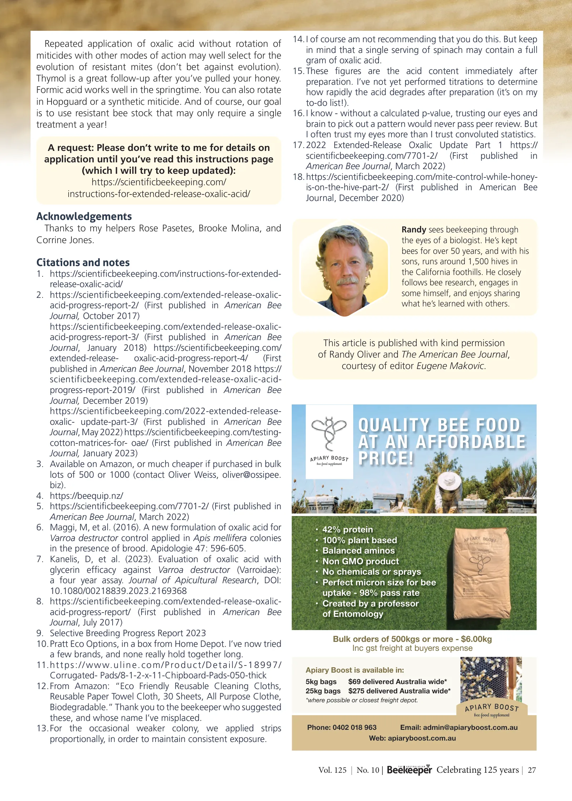

This article is published with kind permission
of Randy Oliver and The American Bee Journal,
courtesy of editor Eugene Makovic.
Randy sees beekeeping through
the eyes of a biologist. He’s kept
bees for over 50 years, and with his
sons, runs around 1,500 hives in
the California foothills. He closely
follows bee research, engages in
some himself, and enjoys sharing
what he’s learned with others.
Repeated application of oxalic acid without rotation of
miticides with other modes of action may well select for the
evolution of resistant mites (don’t bet against evolution).
Thymol is a great follow-up after you’ve pulled your honey.
Formic acid works well in the springtime. You can also rotate
in Hopguard or a synthetic miticide. And of course, our goal
is to use resistant bee stock that may only require a single
treatment a year!
A request: Please don’t write to me for details on
application until you’ve read this instructions page
(which I will try to keep updated):
https://scientificbeekeeping.com/
instructions-for-extended-release-oxalic-acid/
Acknowledgements
Thanks to my helpers Rose Pasetes, Brooke Molina, and
Corrine Jones.
Citations and notes
1. https://scientificbeekeeping.com/instructions-for-extended-
release-oxalic-acid/
2. https://scientificbeekeeping.com/extended-release-oxalic-
acid-progress-report-2/ (First published in American Bee
Journal, October 2017)
https://scientificbeekeeping.com/extended-release-oxalic-
acid-progress-report-3/ (First published in American Bee
Journal, January 2018) https://scientificbeekeeping.com/
extended-release-
oxalic-acid-progress-report-4/
(First
published in American Bee Journal, November 2018 https://
scientificbeekeeping.com/extended-release-oxalic-acid-
progress-report-2019/ (First published in American Bee
Journal, December 2019)
https://scientificbeekeeping.com/2022-extended-release-
oxalic- update-part-3/ (First published in American Bee
Journal, May 2022) https://scientificbeekeeping.com/testing-
cotton-matrices-for- oae/ (First published in American Bee
Journal, January 2023)
3. Available on Amazon, or much cheaper if purchased in bulk
lots of 500 or 1000 (contact Oliver Weiss, oliver@ossipee.
biz).
4. https://beequip.nz/
5. https://scientificbeekeeping.com/7701-2/ (First published in
American Bee Journal, March 2022)
6. Maggi, M, et al. (2016). A new formulation of oxalic acid for
Varroa destructor control applied in Apis mellifera colonies
in the presence of brood. Apidologie 47: 596-605.
7. Kanelis, D, et al. (2023). Evaluation of oxalic acid with
glycerin efficacy against Varroa destructor (Varroidae):
a four year assay. Journal of Apicultural Research, DOI:
10.1080/00218839.2023.2169368
8. https://scientificbeekeeping.com/extended-release-oxalic-
acid-progress-report/ (First published in American Bee
Journal, July 2017)
9. Selective Breeding Progress Report 2023
10. Pratt Eco Options, in a box from Home Depot. I’ve now tried
a few brands, and none really hold together long.
11. https://www.uline.com/Product/Detail/S-18997/
Corrugated- Pads/8-1-2-x-11-Chipboard-Pads-050-thick
12. From Amazon: “Eco Friendly Reusable Cleaning Cloths,
Reusable Paper Towel Cloth, 30 Sheets, All Purpose Clothe,
Biodegradable.” Thank you to the beekeeper who suggested
these, and whose name I’ve misplaced.
13. For the occasional weaker colony, we applied strips
proportionally, in order to maintain consistent exposure.
14. I of course am not recommending that you do this. But keep
in mind that a single serving of spinach may contain a full
gram of oxalic acid.
15. These figures are the acid content immediately after
preparation. I’ve not yet performed titrations to determine
how rapidly the acid degrades after preparation (it’s on my
to-do list!).
16. I know - without a calculated p-value, trusting our eyes and
brain to pick out a pattern would never pass peer review. But
I often trust my eyes more than I trust convoluted statistics.
17. 2022 Extended-Release Oxalic Update Part 1 https://
scientificbeekeeping.com/7701-2/
(First
published
in
American Bee Journal, March 2022)
18. https://scientificbeekeeping.com/mite-control-while-honey-
is-on-the-hive-part-2/ (First published in American Bee
Journal, December 2020)
QUALITY BEE FOOD
AT AN AFFORDABLE
PRICE!
• 42% protein
• 100% plant based
• Balanced aminos
• Non GMO product
• No chemicals or sprays
• Perfect micron size for bee
uptake - 98% pass rate
• Created by a professor
of Entomology
Phone: 0402 018 963 Email: admin@apiaryboost.com.au
Web: apiaryboost.com.au
Apiary Boost is available in:
5kg bags $69 delivered Australia wide*
25kg bags $275 delivered Australia wide*
*where possible or closest freight depot.
Bulk orders of 500kgs or more - $6.00kg
Inc gst freight at buyers expense
Vol. 125 | No. 10 |
Celebrating 125 years | 27